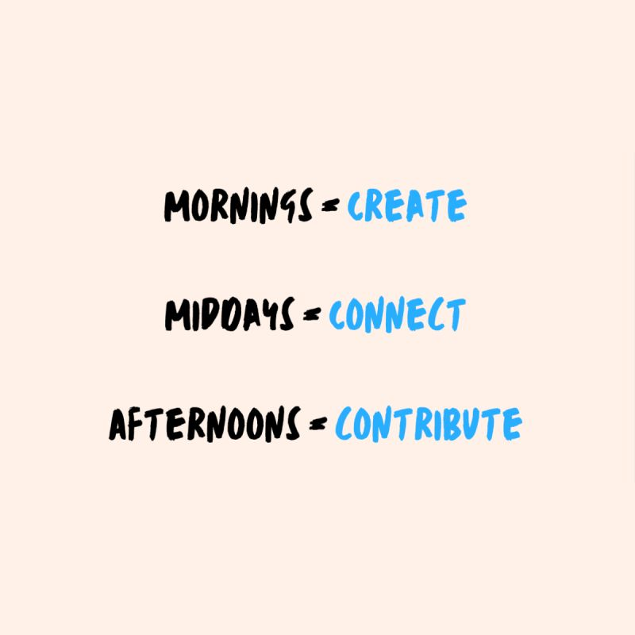

A Daily Routine For Unemployed Game Devs
2 October 2024
🕹 Unemployed as a game developer? Here's how I'm staying on track and keeping my spirits up.
I've crafted a simple daily routine that's been essential for my mental well-being and productivity during this period.
- Mornings: Create 🎨
- Mid-days: Connect 📨
- Afternoons: Contribute 🙌🏽

CREATE: This is all about building skills and creative growth.
While the timing of my next opportunity is uncertain, I'm making the most of this time by exploring new technologies, building games, and honing my craft.
CONNECT: This phase is all about maximizing opportunities.
Whether it's reaching out to my network, applying for roles, or sharing my latest work, I'm just trying to keep the momentum going.
CONTRIBUTE: Giving back to the community is key.
Whether it's helping others in their job search, collaborating on indie projects, or participating in game jams, assisting others is how we're all going to get through this.
🌟 And here's one last bonus...
EVENINGS: Community Evenings are dedicated to recharging with loved ones. It's my time to unplug, rest, and cherish moments with friends and family.
I'd love to hear what strategies have been working for you as you navigate your job search.